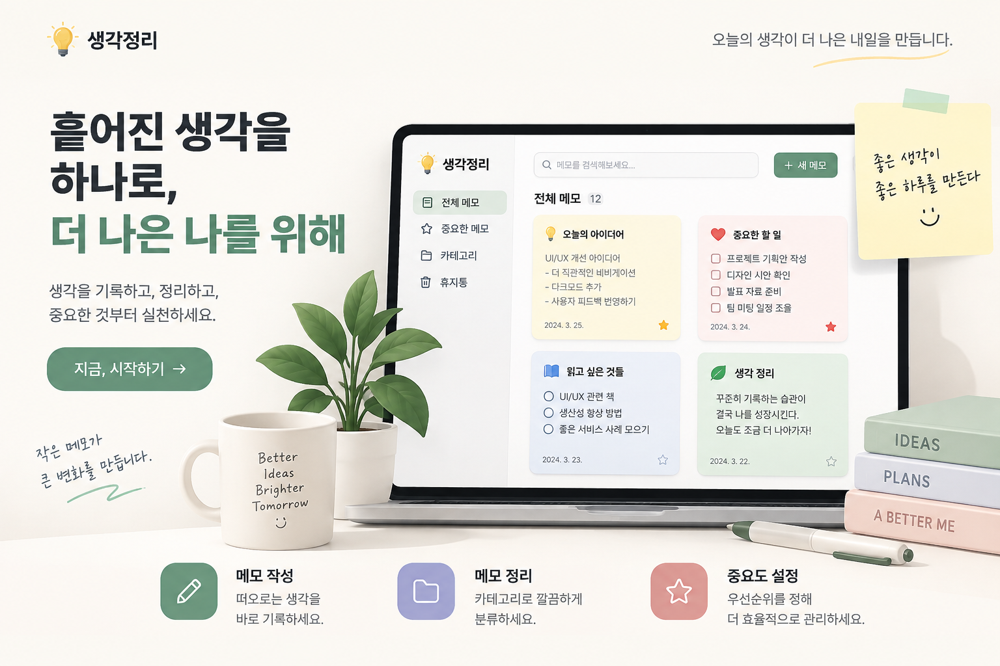

화면 테마
상단의 다크 모드 버튼으로 화면 색상을 바꿀 수 있습니다.
WRITE. ORGANIZE. PRIORITIZE.
MindStore는 생각을 기록하고, 메모의 기한과 중요도를 설정해 체계적으로 관리하도록 돕는 서비스입니다.
메모 작성 시작하기수업용 프로토타입입니다. 녹음이나 외부 서비스 전송은 진행되지 않습니다.

HOW IT WORKS
메모 정보를 입력하고 조건을 고른 뒤 저장합니다.
메모 제목을 입력합니다.
기한과 중요도를 설정합니다.
내용을 확인하고 저장·수정·삭제합니다.
FEATURES
기능 탭을 선택하면 설명을 확인할 수 있습니다.
새로운 생각이나 정보를 메모로 남길 수 있습니다.
작성한 메모를 한 목록에 모아 확인하고 관리할 수 있습니다.
각 메모에 낮음·보통·높음 중 하나의 중요도를 설정할 수 있습니다.
GET READY
이름을 입력하고 안내에 동의하면 메모 작성 화면이 열립니다.
상단의 다크 모드 버튼으로 화면 색상을 바꿀 수 있습니다.
0 / 10
NEW MEMO
이전 단계로 돌아가도 입력한 내용이 유지됩니다.
MY MEMOS
저장된 메모를 수정하거나 취소·복구·삭제할 수 있습니다. 데이터는 이 브라우저에 저장됩니다.
SUBSCRIBE
이메일을 입력하면 신청 완료 메시지를 표시하는 실습 기능입니다.
이메일을 입력한 뒤 신청해 주세요.